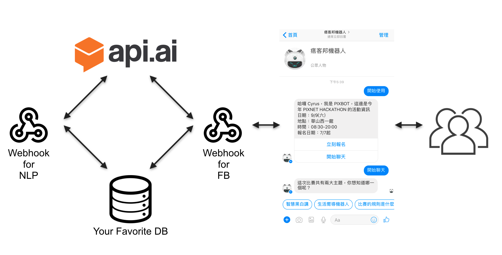
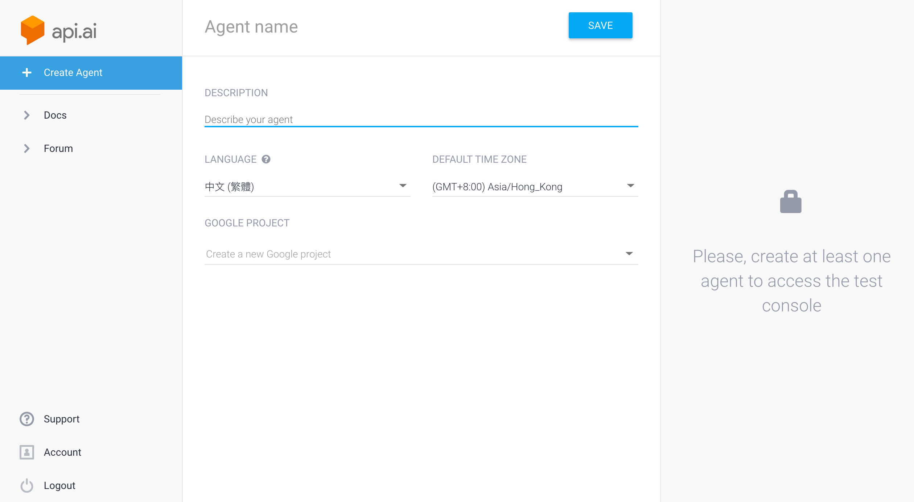
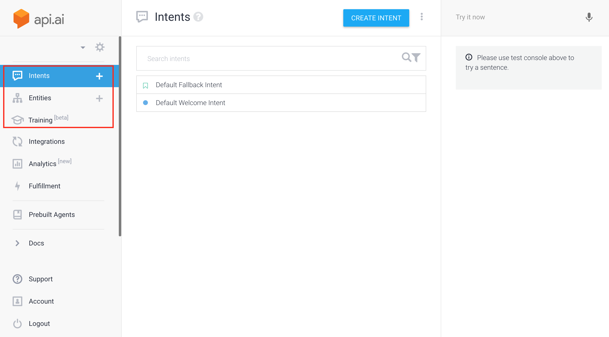
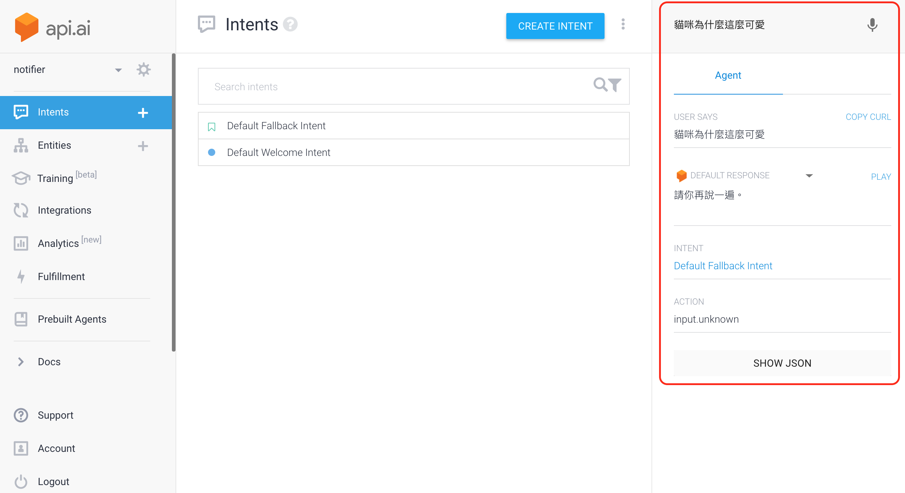
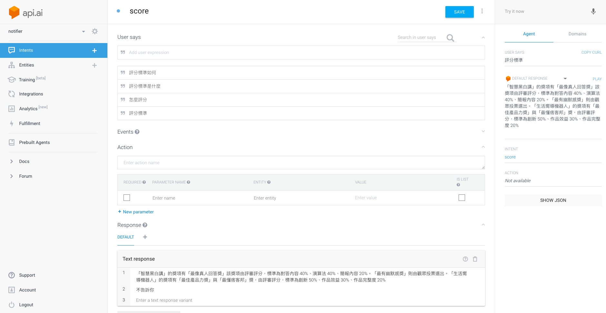
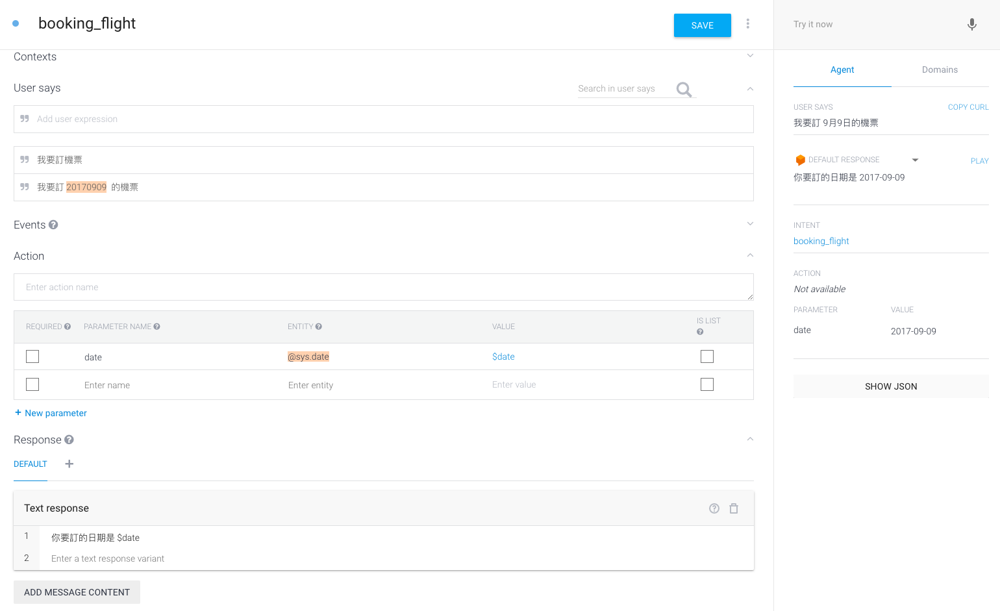
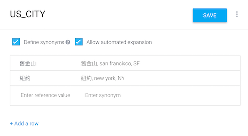
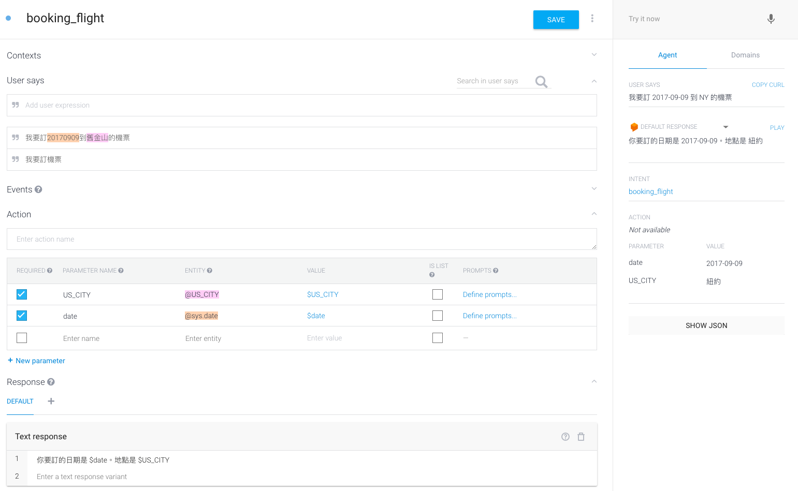
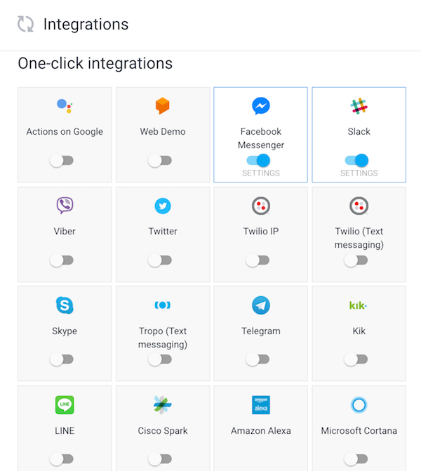
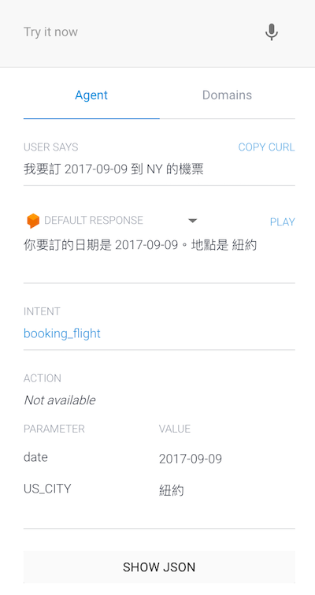

<!DOCTYPE html>
<html lang="en">

<!-- Head tag -->
<head>
    <!-- hexo-inject:begin --><!-- hexo-inject:end --><meta charset="utf-8">
    <meta http-equiv="X-UA-Compatible" content="IE=edge">
    <meta name="google-site-verification" content="xBT4GhYoi5qRD5tr338pgPM5OWHHIDR6mNg1a3euekI" />
    <meta name="viewport" content="width=device-width, initial-scale=1">
    <meta name="description" content="">
    <meta name="keyword"  content="">
    <link rel="shortcut icon" href="/img/favicon.ico">

    <title>
        
          PIXNET HACKATHON chatbot 製作過程：（二）pixbot 學說話 - Cyrus&#39; Blog
        
    </title>

    <link rel="canonical" href="http://cyruschiu.github.io/2017/09/17/development-of-pixbot-2/">

    <!-- Bootstrap Core CSS -->
    <link rel="stylesheet" href="/css/bootstrap.min.css">

    <!-- Custom CSS -->
    <link rel="stylesheet" href="/css/hux-blog.min.css">

    <!-- Pygments Github CSS -->
    <link rel="stylesheet" href="/css/syntax.css">

    <!-- Custom Fonts -->
    <!-- <link href="http://maxcdn.bootstrapcdn.com/font-awesome/4.3.0/css/font-awesome.min.css" rel="stylesheet" type="text/css"> -->
    <!-- Hux change font-awesome CDN to qiniu -->
    <link href="http://cdn.staticfile.org/font-awesome/4.2.0/css/font-awesome.min.css" rel="stylesheet" type="text/css">


    <!-- Hux Delete, sad but pending in China
    <link href='http://fonts.googleapis.com/css?family=Lora:400,700,400italic,700italic' rel='stylesheet' type='text/css'>
    <link href='http://fonts.googleapis.com/css?family=Open+Sans:300italic,400italic,600italic,700italic,800italic,400,300,600,700,800' rel='stylesheet' type='text/
    css'>
    -->


    <!-- HTML5 Shim and Respond.js IE8 support of HTML5 elements and media queries -->
    <!-- WARNING: Respond.js doesn't work if you view the page via file:// -->
    <!--[if lt IE 9]>
        <script src="https://oss.maxcdn.com/libs/html5shiv/3.7.0/html5shiv.js"></script>
        <script src="https://oss.maxcdn.com/libs/respond.js/1.4.2/respond.min.js"></script>
    <![endif]-->

    <!-- ga & ba script hoook -->
    <script></script><!-- hexo-inject:begin --><!-- hexo-inject:end -->
</head>


<!-- hack iOS CSS :active style -->
<body ontouchstart="">

    <!-- hexo-inject:begin --><!-- hexo-inject:end --><!-- Navigation -->
<nav class="navbar navbar-default navbar-custom navbar-fixed-top">
    <div class="container-fluid">
        <!-- Brand and toggle get grouped for better mobile display -->
        <div class="navbar-header page-scroll">
            <button type="button" class="navbar-toggle">
                <span class="sr-only">Toggle navigation</span>
                <span class="icon-bar"></span>
                <span class="icon-bar"></span>
                <span class="icon-bar"></span>
            </button>
            <a class="navbar-brand" href="/">Cyrus&#39;s Blog</a>
        </div>

        <!-- Collect the nav links, forms, and other content for toggling -->
        <!-- Known Issue, found by Hux:
            <nav>'s height woule be hold on by its content.
            so, when navbar scale out, the <nav> will cover tags.
            also mask any touch event of tags, unfortunately.
        -->
        <div id="huxblog_navbar">
            <div class="navbar-collapse">
                <ul class="nav navbar-nav navbar-right">
                    <li>
                        <a href="/">Home</a>
                    </li>

                    

                        
                    

                        
                        <li>
                            <a href="/about/">About</a>
                        </li>
                        
                    

                        
                        <li>
                            <a href="/tags/">Tags</a>
                        </li>
                        
                    
                    
                </ul>
            </div>
        </div>
        <!-- /.navbar-collapse -->
    </div>
    <!-- /.container -->
</nav>
<script>
    // Drop Bootstarp low-performance Navbar
    // Use customize navbar with high-quality material design animation
    // in high-perf jank-free CSS3 implementation
    var $body   = document.body;
    var $toggle = document.querySelector('.navbar-toggle');
    var $navbar = document.querySelector('#huxblog_navbar');
    var $collapse = document.querySelector('.navbar-collapse');

    $toggle.addEventListener('click', handleMagic)
    function handleMagic(e){
        if ($navbar.className.indexOf('in') > 0) {
        // CLOSE
            $navbar.className = " ";
            // wait until animation end.
            setTimeout(function(){
                // prevent frequently toggle
                if($navbar.className.indexOf('in') < 0) {
                    $collapse.style.height = "0px"
                }
            },400)
        }else{
        // OPEN
            $collapse.style.height = "auto"
            $navbar.className += " in";
        }
    }
</script>


    <!-- Main Content -->
    
<!-- Image to hack wechat -->
<!--  -->
<!--  -->

<!-- Post Header -->
<style type="text/css">
    header.intro-header{
        background-image: url('/img/home-bg.jpg')
    }
</style>
<header class="intro-header" >
    <div class="container">
        <div class="row">
            <div class="col-lg-8 col-lg-offset-2 col-md-10 col-md-offset-1">
                <div class="post-heading">
                    <div class="tags">
                        
                          <a class="tag" href="/tags/#開發" title="開發">開發</a>
                        
                          <a class="tag" href="/tags/#chatbot" title="chatbot">chatbot</a>
                        
                    </div>
                    <h1>PIXNET HACKATHON chatbot 製作過程：（二）pixbot 學說話</h1>
                    <h2 class="subheading"></h2>
                    <span class="meta">
                        Posted by Cyrus Chiu on
                        2017-09-17
                    </span>
                </div>
            </div>
        </div>
    </div>
</header>

<!-- Post Content -->
<article>
    <div class="container">
        <div class="row">

    <!-- Post Container -->
            <div class="
                col-lg-8 col-lg-offset-2
                col-md-10 col-md-offset-1
                post-container">

                <h1 id="PIXNET-HACKATHON-chatbot-製作過程：（二）pixbot-學說話"><a href="#PIXNET-HACKATHON-chatbot-製作過程：（二）pixbot-學說話" class="headerlink" title="PIXNET HACKATHON chatbot 製作過程：（二）pixbot 學說話"></a>PIXNET HACKATHON chatbot 製作過程：（二）pixbot 學說話</h1><p>這系列文章主要會提到：</p>
<ul>
<li>在 facebook 平台建立 chatbot 的過程</li>
<li>使用 api.ai 做自然語言處理</li>
<li>使用者與 pixbot 對話記錄的文字探勘</li>
</ul>
<h2 id=""><a href="#" class="headerlink" title=""></a></h2><h2 id="前情提要"><a href="#前情提要" class="headerlink" title="前情提要"></a>前情提要</h2><p>前面我們提到了如何進行 facebook 訊息的傳送與接收。另外，也提到如何使用複雜一點的 payload 型態來傳送按鈕與 quick reply 等等功能。這些功能可以讓我們的 bot 與使用者互相傳送訊息，但我們也提到了，這樣並沒有辦法讓 bot 理解使用者傳送訊息的語意（也就是只有架構圖的右半部）。因此，這邊我們要介紹一個工具：「API.AI」。</p>
<h2 id="不用寫-code-也可以做-chatbot"><a href="#不用寫-code-也可以做-chatbot" class="headerlink" title="不用寫 code 也可以做 chatbot"></a>不用寫 code 也可以做 chatbot</h2><h3 id="建立新的-bot-服務"><a href="#建立新的-bot-服務" class="headerlink" title="建立新的 bot 服務"></a>建立新的 bot 服務</h3><p>在 <a href="https://api.ai/" target="_blank" rel="external">API.AI</a> 的網頁註冊好帳號之後，首先需要 create agent。如下圖，也就是建立一個機器人的服務，這邊請<strong>注意語系的選擇</strong>，這關係到 API.AI 會使用哪一個內建的語言模型來處理我們的對話，如果選擇到英文的話就別怪他沒有辦法幫你處理中文對話囉！</p>
<p></p>
<p>在 agent 建立完成之後，就會來到 API.AI 的主畫面。後面我們會介紹 intent、entity 與 training 的部份。如果你看到下面的畫面，代表已經可以開始對 bot 進行設定了。</p>
<p></p>
<h2 id="Intent"><a href="#Intent" class="headerlink" title="Intent"></a>Intent</h2><p>上圖中，我們可以看到 Default Welcome Intent 以及 Default Fallback Intent。這兩個 intent 是當 agent 開起來就會存在的。例如，Default Fallback Intent 就是當 bot 看不懂使用者問的問題的時候所對應的 intent。</p>
<p>當我們尚未建立任何 intent 時，bot 本身是不認得任何文字的。API.AI 提供了一個方便的測試區塊，也就是下圖中紅色框框的部份。我們嘗試隨便輸入一句話，可以看到 API.AI 自動幫我們的輸入「貓咪為什麼這麼可愛」對應到了「Default Fallback Intent」，而該 intent 的回覆為「請您再說一遍」。</p>
<p></p>
<p>於是我們應該為自己的 chatbot 建立 intent，不然的話你向 chatbot 說什麼，他可是什麼都聽不懂的。</p>
<p>在 API.AI 建立 intent 的方法非常簡單，如下圖，這是一個回應「評分標準」的 intent，我們將 intent name 命名為 score。在下面的 <code>User says</code> 欄位，顧名思義就是使用者對 bot 說了什麼話。這邊我們把一些可能的問法都列出來，讓這些問法都能夠 mapping 到這個 intent。在最下方的 <code>Text response</code> 這個欄位中，必須填上要給使用者的回覆。也就是說，當使用者輸入的句子 mapping 到這個 intent 時，chatbot 該給出的回覆。可以看到這裡寫了兩個回覆，一個是正確的評分標準，另一個是「不告訴你」。API.AI 會從這兩個句子中隨機挑選一個回覆。</p>
<p></p>
<p>在這邊可以看到，在畫面右邊的測試區輸入問題後，chatbot 已經可以正確把「評分標準」對應到 score 這個 intent，我們的 chatbot 就可以正確做回覆囉。按下測試區的麥克風按鈕和 play 按鈕，還可以用語音來輸入輸出，實在是很炫的功能。</p>
<p>我們會建議大家在還沒有開始實作 chatbot 之前，先把 chatobot 可能遇到的問題想一想，並且整理下來。並在整理完之後對這些問題進行整理，把類似的問題群聚在一起，將聚在一起的問題賦予一個共同的 intent。另外，也可以開始進行 entity 的解構，將這些問題中可能的 entity 先行提取出來。就像寫程式那樣，逐步對問題進行抽象，直到最後變成 intent 與 entity。</p>
<p>舉個複雜一點的例子來說，假如我們想實現訂機票的功能。那麼可能的問題如下：</p>
<ul>
<li>我要訂機票</li>
<li>我要訂飛機票</li>
<li>我要訂 9/9 的飛機票</li>
<li>我要訂 9/9 到舊金山的飛機票</li>
<li>我要訂 9/9 從台北到舊金山的飛機票</li>
<li>我要訂 9/9 從台北到舊金山，航班號碼為 PIX123 的機票</li>
<li>我要訂到舊金山的飛機票</li>
</ul>
<p>上面這些句子都對應到了「訂機票」這個 intent，所以他們都該歸類在 <code>booking_flight</code> 這個 intent 底下。但我們可以發現，雖然都是訂機票的句子，可是有的句子講的很清楚，有的句子講的不明不白，有很多資訊需要補齊。這些需要被補齊的資訊就是 entity。</p>
<p>因此，我們可以想像一下「訂機票」是這樣的一個函數：</p>
<figure class="highlight plain"><table><tr><td class="code"><pre><div class="line">booking_flight(date=date,  departure_time=departure_time, from=from, to=to, flight_number=flight_number)</div></pre></td></tr></table></figure>
<p>其中帶有參數 <code>date</code> 日期、 <code>departure_time</code> 出發時間、 <code>from</code> 出發地、 <code>to</code> 目的地、 <code>flight_number</code> 航班號碼等等。然後我們不斷的透過問答，引導使用者回應出所有該回答的參數。也只有在參數都齊全之後才有辦法進行訂票。</p>
<h2 id="Entity"><a href="#Entity" class="headerlink" title="Entity"></a>Entity</h2><p>發現了嗎，這些被解構出來的參數，其實每一個都是 entity，我們必須針對每一個 entity 分別設定。 API.AI 已經幫我們做了一些基本的 entity，降低我們在輸入 entity 時的複雜程度。</p>
<p>下圖顯示了，在 booking_flight 這個 intent 底下，我們將預設的 User says「我要訂20170909 的機票」之中日期的地方反白，賦予一個 <code>@sys.date</code> 的 entity。這就是系統預設的日期 entity，如果沒有預設這個 entity 的話，我們就得輸入所有的日期格式了！在右邊的測試區可以看到，輸入「我要訂9月9日的機票」，API.AI 仍然可以解析出這個 entity，並將他輸出成系統預設的 date 格式： 2017-09-09。</p>
<p></p>
<p>讓我們加上地點的 entity，把例子變得更複雜一些。我們首先手動加入一些地點，例如「舊金山」，和他的同義詞。這邊我們只簡單加入幾個，然後把這些 entity 命名為 US_CITY。</p>
<p></p>
<p>在新增完 entity 之後，重新回到 intent 設定的地方。我們來看看怎麼設定 intent 中的各個 entity：</p>
<ol>
<li>輸入一個模版句子「我要訂20170909到舊金山的機票」。</li>
<li>將「20170909」的部份反白，在 entity 的地方將他設定為前面提過的 <code>@sys.date</code> 。</li>
<li>將「舊金山」的地方反白，在 entity 的地方將他設定為 <code>@US_CITY</code> ，這也是我們剛剛手動創建的 entity。</li>
<li>將 REQUIRED 的部份打勾，代表為必答欄位。（如果使用者在這句話沒有回答的話，可以在 PROMPTS 的地方設定預設的問句來引導使用者回答。）</li>
<li>最後，在 chatbot 回應的地方設定「你要訂的日期是 <code>$date</code> 。地點是 <code>$US_CITY</code> 」。</li>
</ol>
<p>然後，我們就可以在右邊的測試區看到結果囉，並且 PARAMETER 之中的 <code>date</code> 與 <code>US_CITY</code> 也都有正確解析出來。</p>
<p></p>
<h3 id="與-bot-平台的串接"><a href="#與-bot-平台的串接" class="headerlink" title="與 bot 平台的串接"></a>與 bot 平台的串接</h3><p>事實上，真的可以完全不寫任何一段 code 就做好一個 chatbot。既然這樣，為什麼前面的文章裡以及 pixbot 的架構圖中又包含了不少程式呢？原因是我們希望收錄使用者的對話記錄以及一些進階功能，因此我們需要將 API.AI 給出的回應重新導向，所以才需要寫部分的程式碼。如果只是想做個可以簡單互動的 chatbot，是可以不用寫任何程式的哦！</p>
<p>在 Integrations 的地方，打開你想串接的平台，進入設定畫面填入該填的 TOKEN，這樣你的 bot 就可以立刻上線囉～</p>
<p></p>
<h2 id="不是說好不寫-code-嗎"><a href="#不是說好不寫-code-嗎" class="headerlink" title="不是說好不寫 code 嗎"></a>不是說好不寫 code 嗎</h2><p>API.AI 提供了不少語言的 SDK，方便我們開發自己的應用，完成一些比較複雜的功能。這邊來整理一下 pixbot 的流程：</p>
<ol>
<li>使用者傳訊息給 pixbot</li>
<li>pixbot 透過 facebook webhook 收到訊息</li>
<li>訊息轉給 API.AI 進行語意分析</li>
<li>API.AI 回應適合的答句給 webhook</li>
<li>送出從 API.AI 過來的答句給使用者</li>
</ol>
<p>在上面的五個步驟裡，如果不寫程式的話，其實就是做了1, 3, 5三個步驟。在我們自行加上 webhook 後，我們至少必須進行兩件事：</p>
<ol>
<li>透過 API.AI 提供的 SDK 來和 API.AI 傳送與接收訊息</li>
<li>解析 API.AI 傳送的訊息格式，轉為 facebook 的訊息格式</li>
</ol>
<p></p>
<p>在 API.AI 的測試區可以看到一個 SHOW JSON 的按鈕，按下去之後會顯示這個問與答的資料格式：</p>
<figure class="highlight plain"><table><tr><td class="code"><pre><div class="line">&#123;</div><div class="line">  &quot;id&quot;: &quot;f665edd1-fc49-4113-8ba5-3f11e00788d9&quot;,</div><div class="line">  &quot;timestamp&quot;: &quot;2017-08-10T03:47:22.994Z&quot;,</div><div class="line">  &quot;lang&quot;: &quot;zh-tw&quot;,</div><div class="line">  &quot;result&quot;: &#123;</div><div class="line">    &quot;source&quot;: &quot;agent&quot;,</div><div class="line">    &quot;resolvedQuery&quot;: &quot;我要訂 2017-09-09 到 NY 的機票&quot;,</div><div class="line">    &quot;action&quot;: &quot;&quot;,</div><div class="line">    &quot;actionIncomplete&quot;: false,</div><div class="line">    &quot;parameters&quot;: &#123;</div><div class="line">      &quot;date&quot;: &quot;2017-09-09&quot;,</div><div class="line">      &quot;US_CITY&quot;: &quot;紐約&quot;</div><div class="line">    &#125;,</div><div class="line">    &quot;contexts&quot;: [],</div><div class="line">    &quot;metadata&quot;: &#123;</div><div class="line">      &quot;intentId&quot;: &quot;6aaad95d-c44d-45a8-b829-a54ed8a0c5d5&quot;,</div><div class="line">      &quot;webhookUsed&quot;: &quot;false&quot;,</div><div class="line">      &quot;webhookForSlotFillingUsed&quot;: &quot;false&quot;,</div><div class="line">      &quot;intentName&quot;: &quot;booking_flight&quot;</div><div class="line">    &#125;,</div><div class="line">    &quot;fulfillment&quot;: &#123;</div><div class="line">      &quot;speech&quot;: &quot;你要訂的日期是 2017-09-09。地點是 紐約&quot;,</div><div class="line">      &quot;messages&quot;: [</div><div class="line">        &#123;</div><div class="line">          &quot;type&quot;: 0,</div><div class="line">          &quot;speech&quot;: &quot;你要訂的日期是 2017-09-09。地點是 紐約&quot;</div><div class="line">        &#125;</div><div class="line">      ]</div><div class="line">    &#125;,</div><div class="line">    &quot;score&quot;: 1</div><div class="line">  &#125;,</div><div class="line">  &quot;status&quot;: &#123;</div><div class="line">    &quot;code&quot;: 200,</div><div class="line">    &quot;errorType&quot;: &quot;success&quot;</div><div class="line">  &#125;,</div><div class="line">  &quot;sessionId&quot;: &quot;4f191c49-bbe2-4b62-ab25-6c7edc81b831&quot;</div><div class="line">&#125;</div></pre></td></tr></table></figure>
<p>我們可以寫一個 parser 自行解析 json 封包裡面的重要欄位，並且透過以下利用 API.AI 的 python SDK 來進行資料的交換。這樣一來就可以完成上面 1~5 的完整步驟囉！</p>
<figure class="highlight python"><table><tr><td class="code"><pre><div class="line"></div><div class="line"><span class="keyword">import</span> apiai</div><div class="line"></div><div class="line">CLIENT_ACCESS_TOKEN = <span class="string">'YOUR_TOKEN'</span></div><div class="line"></div><div class="line"><span class="comment"># Conversation API Interface</span></div><div class="line"><span class="function"><span class="keyword">def</span> <span class="title">talk</span><span class="params">(message,uid)</span>:</span></div><div class="line">    ai = apiai.ApiAI(CLIENT_ACCESS_TOKEN)</div><div class="line">    request = ai.text_request()</div><div class="line">    </div><div class="line">    <span class="comment"># 此次 Hackathon Languge Model 是採用 zh_cn</span></div><div class="line">    request.lang = <span class="string">'zh_cn'</span>  </div><div class="line">    request.session_id = uid</div><div class="line">    request.query = message</div><div class="line"></div><div class="line">    respone = request.getresponse()</div><div class="line">    rdata = str(response.read(),<span class="string">'utf-8'</span>)</div><div class="line">    robj = json.loads(rdata)</div><div class="line">    djson(robj)</div><div class="line"></div><div class="line">    <span class="keyword">return</span> robj</div></pre></td></tr></table></figure>


                <hr>

                

                <ul class="pager">
                    
                    
                        <li class="next">
                            <a href="/2017/09/10/development-of-pixbot-1/" data-toggle="tooltip" data-placement="top" title="PIXNET HACKATHON chatbot 製作過程：（一）pixbot 的誕生">Next Post &rarr;</a>
                        </li>
                    
                </ul>

                

                
                <!-- disqus 评论框 start -->
                <div class="comment">
                    <div id="disqus_thread" class="disqus-thread"></div>
                </div>
                <!-- disqus 评论框 end -->
                

            </div>
    <!-- Side Catalog Container -->
        

    <!-- Sidebar Container -->

            <div class="
                col-lg-8 col-lg-offset-2
                col-md-10 col-md-offset-1
                sidebar-container">

                <!-- Featured Tags -->
                
                <section>
                    <!-- no hr -->
                    <h5><a href="/tags/">FEATURED TAGS</a></h5>
                    <div class="tags">
                       
                          <a class="tag" href="/tags/#開發" title="開發">開發</a>
                        
                          <a class="tag" href="/tags/#chatbot" title="chatbot">chatbot</a>
                        
                    </div>
                </section>
                

                <!-- Friends Blog -->
                
            </div>

        </div>
    </div>
</article>


<!-- disqus 公共JS代码 start (一个网页只需插入一次) -->
<script type="text/javascript">
    /* * * CONFIGURATION VARIABLES * * */
    var disqus_shortname = "cyrusblog";
    var disqus_identifier = "http://cyruschiu.github.io/2017/09/17/development-of-pixbot-2/";
    var disqus_url = "http://cyruschiu.github.io/2017/09/17/development-of-pixbot-2/";

    (function() {
        var dsq = document.createElement('script'); dsq.type = 'text/javascript'; dsq.async = true;
        dsq.src = '//' + disqus_shortname + '.disqus.com/embed.js';
        (document.getElementsByTagName('head')[0] || document.getElementsByTagName('body')[0]).appendChild(dsq);
    })();
</script>
<!-- disqus 公共JS代码 end -->


<!-- async load function -->
<script>
    function async(u, c) {
      var d = document, t = 'script',
          o = d.createElement(t),
          s = d.getElementsByTagName(t)[0];
      o.src = u;
      if (c) { o.addEventListener('load', function (e) { c(null, e); }, false); }
      s.parentNode.insertBefore(o, s);
    }
</script>
<!-- anchor-js, Doc:http://bryanbraun.github.io/anchorjs/ -->
<script>
    async("http://cdn.bootcss.com/anchor-js/1.1.1/anchor.min.js",function(){
        anchors.options = {
          visible: 'always',
          placement: 'right',
          icon: ''
        };
        anchors.add().remove('.intro-header h1').remove('.subheading').remove('.sidebar-container h5');
    })
</script>
<style>
    /* place left on bigger screen */
    @media all and (min-width: 800px) {
        .anchorjs-link{
            position: absolute;
            left: -0.75em;
            font-size: 1.1em;
            margin-top : -0.1em;
        }
    }
</style>


    <!-- Footer -->
    <!-- Footer -->
<footer>
    <div class="container">
        <div class="row">
            <div class="col-lg-8 col-lg-offset-2 col-md-10 col-md-offset-1">
                <ul class="list-inline text-center">
                
                
                

                

                
                    <li>
                        <a target="_blank" href="https://www.facebook.com/cyrus.chiu1">
                            <span class="fa-stack fa-lg">
                                <i class="fa fa-circle fa-stack-2x"></i>
                                <i class="fa fa-facebook fa-stack-1x fa-inverse"></i>
                            </span>
                        </a>
                    </li>
                

                
                    <li>
                        <a target="_blank"  href="https://github.com/CyrusChiu">
                            <span class="fa-stack fa-lg">
                                <i class="fa fa-circle fa-stack-2x"></i>
                                <i class="fa fa-github fa-stack-1x fa-inverse"></i>
                            </span>
                        </a>
                    </li>
                

                

                </ul>
                <p class="copyright text-muted">
                    Copyright &copy; Cyrus&#39;s Blog 2017 
                    <br>
                </p>
            </div>
        </div>
    </div>
</footer>

<!-- jQuery -->
<script src="/js/jquery.min.js"></script>

<!-- Bootstrap Core JavaScript -->
<script src="/js/bootstrap.min.js"></script>

<!-- Custom Theme JavaScript -->
<script src="/js/hux-blog.min.js"></script>


<!-- async load function -->
<script>
    function async(u, c) {
      var d = document, t = 'script',
          o = d.createElement(t),
          s = d.getElementsByTagName(t)[0];
      o.src = u;
      if (c) { o.addEventListener('load', function (e) { c(null, e); }, false); }
      s.parentNode.insertBefore(o, s);
    }
</script>

<!-- 
     Because of the native support for backtick-style fenced code blocks 
     right within the Markdown is landed in Github Pages, 
     From V1.6, There is no need for Highlight.js, 
     so Huxblog drops it officially.

     - https://github.com/blog/2100-github-pages-now-faster-and-simpler-with-jekyll-3-0  
     - https://help.github.com/articles/creating-and-highlighting-code-blocks/    
-->
<!--
    <script>
        async("http://cdn.bootcss.com/highlight.js/8.6/highlight.min.js", function(){
            hljs.initHighlightingOnLoad();
        })
    </script>
    <link href="http://cdn.bootcss.com/highlight.js/8.6/styles/github.min.css" rel="stylesheet">
-->


<!-- jquery.tagcloud.js -->
<script>
    // only load tagcloud.js in tag.html
    if($('#tag_cloud').length !== 0){
        async("http://cyruschiu.github.io/js/jquery.tagcloud.js",function(){
            $.fn.tagcloud.defaults = {
                //size: {start: 1, end: 1, unit: 'em'},
                color: {start: '#bbbbee', end: '#0085a1'},
            };
            $('#tag_cloud a').tagcloud();
        })
    }
</script>

<!--fastClick.js -->
<script>
    async("http://cdn.bootcss.com/fastclick/1.0.6/fastclick.min.js", function(){
        var $nav = document.querySelector("nav");
        if($nav) FastClick.attach($nav);
    })
</script>


<!-- Google Analytics -->


<script>
    // dynamic User by Hux
    var _gaId = 'UA-80209721-1';
    var _gaDomain = 'cyruschiu.github.io';

    // Originial
    (function(i,s,o,g,r,a,m){i['GoogleAnalyticsObject']=r;i[r]=i[r]||function(){
    (i[r].q=i[r].q||[]).push(arguments)},i[r].l=1*new Date();a=s.createElement(o),
    m=s.getElementsByTagName(o)[0];a.async=1;a.src=g;m.parentNode.insertBefore(a,m)
    })(window,document,'script','//www.google-analytics.com/analytics.js','ga');

    ga('create', _gaId, _gaDomain);
    ga('send', 'pageview');
</script>


<!-- Baidu Tongji -->


<!-- Side Catalog -->


<!-- Image to hack wechat -->

<!-- Migrate from head to bottom, no longer block render and still work --><!-- hexo-inject:begin --><!-- Begin: Injected MathJax -->
<script type="text/x-mathjax-config">
  MathJax.Hub.Config({"tex2jax":{"inlineMath":[["$","$"],["\\(","\\)"]],"skipTags":["script","noscript","style","textarea","pre","code"],"processEscapes":true},"TeX":{"equationNumbers":{"autoNumber":"AMS"}}});
</script>

<script type="text/x-mathjax-config">
  MathJax.Hub.Queue(function() {
    var all = MathJax.Hub.getAllJax(), i;
    for(i=0; i < all.length; i += 1) {
      all[i].SourceElement().parentNode.className += ' has-jax';
    }
  });
</script>

<script type="text/javascript" src="//cdn.mathjax.org/mathjax/latest/MathJax.js?config=TeX-AMS-MML_HTMLorMML">
</script>
<!-- End: Injected MathJax -->
<!-- hexo-inject:end -->

</body>

</html>
